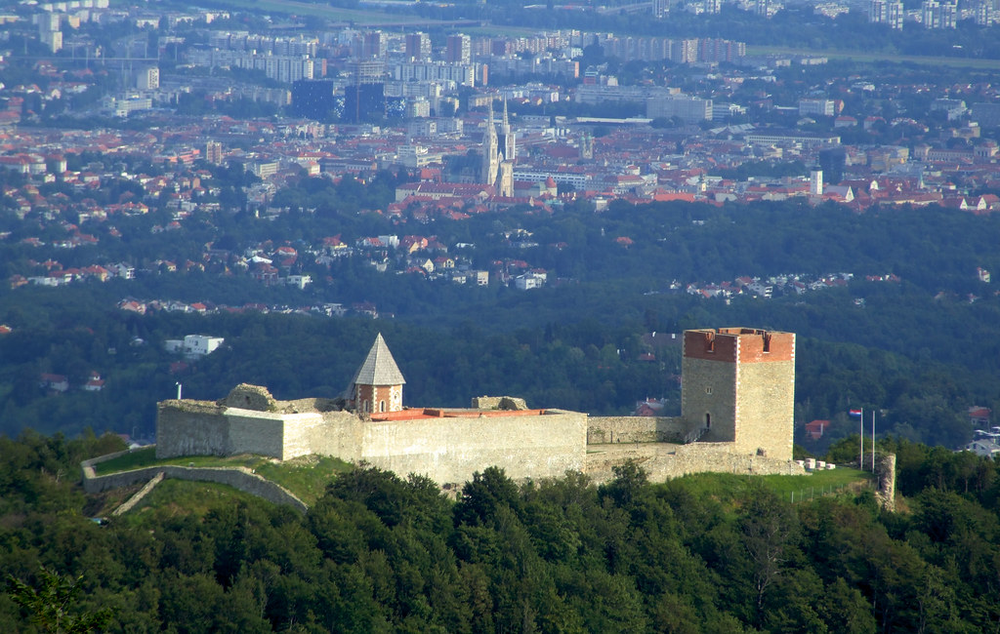
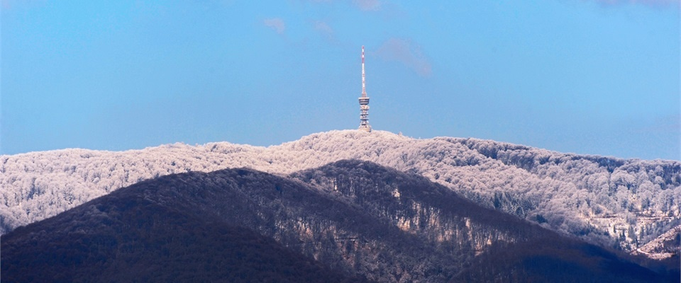

Medvednica(Visit!) (pronounced [mɛ̌dʋɛdnit͡sa])[1] is a mountain in central Croatia, just north of Zagreb, and marking the southern border of the historic region of Zagorje. The highest peak, at 1,035 m (3,396 ft) is Sljeme.[2] Most of the area of Medvednica is a nature park (park prirode), a type of preservation lesser than a national park.[3] The area of the park is 228.26 km2 (88.1 sq mi) and about 63% is covered with forest. During Miocene and Pliocene, the mountain was an island within the Pannonian Sea.
The name Medvednica could be translated as "bear mountain", there being other toponyms on the mountain using the Kajkavian dialect term medved (standard Croatian "medvjed" = bear), notably Medvedgrad, a medieval castle on its southwestern edges.
Sljeme ([sʎɛ̂mɛ]) (Sleme in Kajkavian) means summit, and it is a name often used to refer to the entire mountain.
he climate of the Medvednica mountain is typical for Central European mountain ranges. The average annual precipitation is around 1300 mm (cf. 840 mm at Zagreb–Grič), which provides for an abundance of rich spring wells. Snow cover lasts for about 100 days in a year, the thickest being in February. The skiing slopes are also covered with artificial snow when necessary. Much more sunshine occurs during the winter on Medvednica than in Zagreb or Zagorje, so it is not surprising that winter is the most visited season on the Medvednica mountain.
Medvednica, in comparison to the surrounding lowland area, behaves as an "island" in its climate characteristics, with more precipitation, lower temperatures, and higher duration and quantity of snow cover. The Medvednica area is located in a temperature zone where air temperature decreases for 0.5°C for every 100 m of elevation. Based on the annual rate of precipitation, Medvednica is characterised as having a continental precipitation regimen with maximum precipitation during the warm part of the year (April to September).
During summer and winter, temperature inversion is sometimes present. An anticyclone forms above the cold continent during winter. When its center is close to Croatia, the weather is cold and gloomy in Zagreb and warmer at Sljeme.[4][5] The mean annual air temperature on Medvednica is 6.2 °C (43.2 °F), compared with 11.4 °C (52.5 °F) in Zagreb. The mean temperature in summer months is on average lower by 6 °C (11 °F) than in Zagreb.[4]
On average, 15 days have temperatures below −10 °C (14 °F), eight days a year have average daily maxima higher than 25 °C (77 °F), and only one day reaches above 30 °C (86 °F). The coldest month is January with a mean monthly air temperature of −3.1 °C (26.4 °F), while the warmest month is July with an average temperature of 15.2 °C (59.4 °F). Insolation exceeds Zagreb's by about 100 hours annually. This difference manifests itself during the colder period of the year, from October to March, when more fog occurs in Zagreb.[4]
The relative air humidity is largest during the cold part of the year, and generally is larger on stations with higher altitude because of lower temperatures, but luxuriant vegetation. The number of days with relative humidity above 80% is greatest on Puntijarka (158 days annually), and it decreases with the decrease in elevation; for example, at the Zagreb–Grič station it is 67 days annually. On all stations, the warm part of the year (from April to September) has the most thunderstorm days; these are often connected to showers. June has the most thunderstorm days (Puntijarka 7).
The annual precipitation on Medvednica is about 50% higher in comparison to Zagreb (Zagreb: 844 mm (33.2 in), Sljeme: 1,238 mm (48.7 in), Kraljičin zdenac: 1,159 mm (45.6 in), Fakultetsko dobro: 1,142 mm (45.0 in)). Average number of days with hoar is 40 (4 in Zagreb). The mean annual number of days with snowfall on the top of Medvednica, most usually in January and February, is 54 days.
The number of days with strong wind is 91 (26 in Zagreb) and they are more frequent during the cold part of the year. The number of days with storm-force wind is 21 (2 in Zagreb), also mostly during the cold part of the year. In 1980, the forests of Medvednica, especially beech trees, were heavily stricken by a catastrophic ice break. Later, in February 1983, large devastations occurred as a result of strong wind (large damage on fir). Effects of such a strong wind can be seen in the area of Adolfovac as of early 2010s.[6]

A winter sports center is based on the northern slopes towards Sljeme. The center has hosted several FIS World Cup slalom skiing races, known as the Snow Queen Trophy.
The winter sports center consists of one chairlift for three persons and two T-bar lifts. Equipment for producing artificial snow has been added, and because of that, the skiing season has been prolonged to more than four months. Three ways exist to reach the mountain: by road (with a car or a bus) or on foot (numerous mountain paths). In the past, a gondola lift was present, which started from the Gračani neighborhood just below Medvednica. The cable car had run from 1963 to 2007, when a major fault in the engine room made repairs economically impossible.[7] The gondola had a capacity for four people, with a 23-minute journey time, covering a distance of 4023 m. The new gondola lift will use the existing route extended by 3 km.[8][needs up
On Medvednica are dozen of mountain huts for traditional one-day trips to the mountain. Because of its proximity to Zagreb, Medvednica has many visitors, especially during weekends.[9] Among the most popular sites is the Veternica cave with a 2,622-m-long main channel.